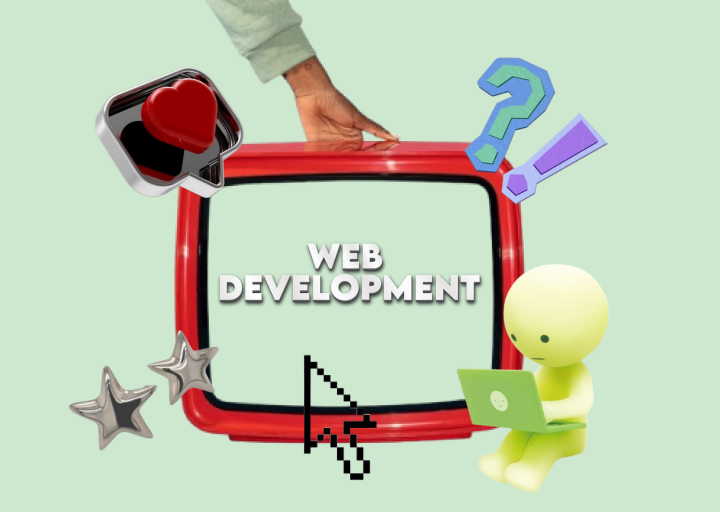

home
hi! I'm Ma. Loreen M. Marajas
I'm an IT student from the Polytechnic University of the Philippines - Sto. Tomas Campus.
Know More
about me
My journey in web development is fueled by a passion for crafting interactive, engaging digital experiences.
Driven by a creative vision, I focus on designing websites that are both visually striking and highly
functional, making sure each one delivers a smooth, intuitive user experience. Each project I work on is a
step forward in my goal of mastering both front-end and back-end development, with a strong focus on staying
current with the latest trends and technologies. Explore my portfolio to see the projects that have defined
my skills along the way, and let’s work together to bring something truly inspiring to life!
See My Skills
my projects

WEB DEVELOPMENT
This section showcases the projects I have worked on
during my 3rd Year, 1st Semester in Web Development. These
projects highlight my skills in front-end and back-end
development, combining creativity with functionality to
build engaging and user-friendly websites.
Explore

APP DEVELOPMENT
This section will feature the projects I will be working
on during my 3rd Year, 2nd Semester in App Development and
Emerging Technologies. These projects will focus on
building innovative applications that leverage modern
tools and technologies to deliver efficient and
user-centric solutions.
Explore
SIDE QUESTS DEVELOPMENT
This section showcases projects that reflect both my
creativity and technical skills. From web applications to
mini-games, each project highlights my passion for
building interactive and user-focused digital experiences.
Explore